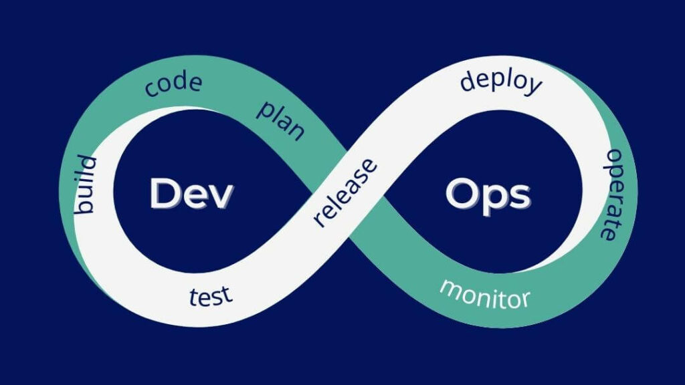

Un développeur DevOps fait le pont entre la création de logiciels (les développeurs) et la gestion des serveurs (les équipes opérationnelles). Son rôle principal est d'automatiser et de fluidifier toutes les étapes, de l'écriture du code jusqu'à la mise en ligne pour l'utilisateur final.
|  |